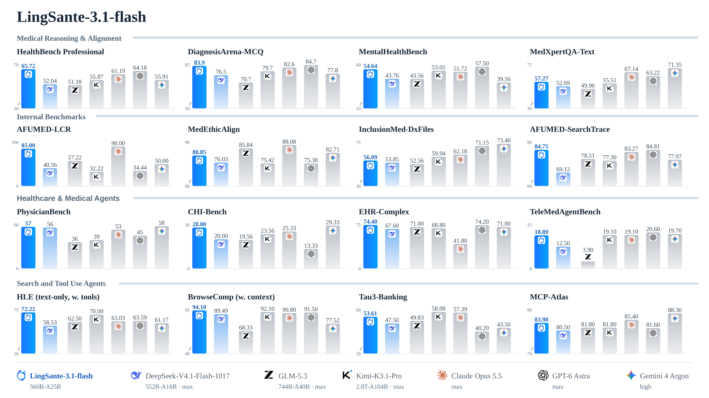

🤗 Hugging Face | 🤖 ModelScope
Introduction
LingSante-3.1-flash-MXFP4 is an open-weight Mixture-of-Experts model that combines complex medical reasoning, professional healthcare communication, evidence-based deep research, and long-horizon medical tasks. Built on LingSante-3.1-flash, it has approximately 560 billion parameters in the main model, activates approximately 25 billion parameters per token, and has a configured 262,144-token context window.
Real-world medical tasks present challenges that go beyond general intelligence, including incomplete health information, substantial patient heterogeneity, and strict operational and compliance requirements. To address these demands, LingSante-3.1-flash is trained to unify medical reasoning and workflow execution through native medical-mixed pretraining, mid-training, supervised fine-tuning, task-specific reinforcement learning, and multi-teacher on-policy distillation.
This version uses Round-to-Nearest (RTN) post-training quantization, with MXFP4 weights for routed experts and retained FP8/BF16 weights for other modules.
LingSante-3.1-flash-MXFP4 is intended for research and evaluation. It is not a medical device and must not be used as an independent basis for diagnosis, prescriptions, or treatment.
LingSante-3.1-flash-MXFP4
| Property | Value |
|---|---|
| Source model | LingSante-3.1-flash |
| Weight format | Mixed MXFP4 / FP8 / BF16 / FP32 |
| Checkpoint size (all files) | 291.72 GiB (313.23 GB; 313,230,131,991 bytes) |
| MXFP4 representation | E2M1 weights; group size 32; shared E8M0 scales; two FP4 values packed per byte |
| Algorithm | RTN (round-to-nearest), without additional training |
| Calibration | None |
| Quantized modules | Routed expert gate_proj, up_proj, and down_proj |
| Retained in FP8 | Source FP8 dense MLP, shared-expert, KDA and attention matrices; E4M3, 128×128 blocks, FP32 scales |
| Retained in BF16 | Embeddings, lm_head, router weights, norms, MLA g_proj, KDA b_proj and convolution weights, MTP eh_proj |
| Retained in FP32 | KDA A_log, dt_bias, and router expert_bias |
| Expert activation precision | Configured at serving time: Humming W4A8 (FP8 E4M3, group size 32) or W4A16 (BF16) |
| MTP | One prediction layer, retained with module-wise mixed precision |
| Recommended deployment | 4 × NVIDIA H20-3e; TP4 / EP4 / DP1 |
Source Model Scores
The following figure presents benchmark results reported for LingSante-3.1-flash, the source model of this MXFP4-RTN release. These scores refer to the source model and do not represent measurements of the quantized checkpoint.

Key Capabilities
- Complex Medical Reasoning. Beyond accurate knowledge understanding, complex medical reasoning requires to identify the key factors behind clinical decisions, validate supporting evidence, and resolve potential conflicts across evidence sources. To support this, we develop a medical evidence–reasoning alignment framework that strengthens the model’s reasoning foundation through high-quality data synthesis and systematic training.
- Long-Horizon Medical Tasks. Long-horizon medical tasks differ fundamentally from those in general domains. They require models to operate across interconnected sub-scenarios, coordinate tools and information within a single workflow, and adapt their plans as new information emerges. To support this, we develop a long-horizon medical task framework that combines realistic interactive environments, diverse tool-use settings, and structured verification. This approach strengthens the model’s ability to execute complex workflows reliably in dynamic medical settings, providing a scalable foundation for training on real-world medical task execution.
- Medical Professional Behavior Alignment. Medical tasks in the real world often involve incomplete information, evolving context, and strict safety expectations. The model must deliver responses that are context-aware, professional, and actionable. To support this, we develop a professional behavior alignment framework that aligns model responses with real clinical scenarios and medical professional standards.
Model Overview
LingSante-3.1-flash-MXFP4 retains the architecture of LingSante-3.1-flash.
| Specification | Value |
|---|---|
| Architecture | Hybrid-linear MoE |
| Main model parameters (excluding MTP) | Approximately 560B |
| Activated parameters per token (main model) | Approximately 25B |
| Configured context window | 262,144 tokens |
| Transformer layers | 63 KDA + 9 Gated MLA (7:1) |
| MTP prediction layers | 1 |
| Dense layers | 4 |
| Routed experts | 512 |
| Shared experts | 1 |
| Activated routed experts per token | 8 |
| Attention heads | 64 |
| Hidden size | 4096 |
| Expert intermediate size | 1280 |
| Dense intermediate size | 10240 |
| Vocabulary size | 157184 |
| Weight format | Routed-expert MXFP4 with FP8/BF16/F32 modules |
Training
General and medical data are used together throughout pretraining, mid-training, and supervised fine-tuning. Medical data provide domain knowledge and clinically grounded training examples, while general data help maintain broad capabilities such as reasoning, coding, search, and tool use.
During post-training, we further improve the model with reinforcement learning for medical reasoning, tool use, search, and professional behavior. These training setups are designed to strengthen not only task performance, but also the quality, reliability, and efficiency of execution under real-world constraints.
Finally, we bring these capabilities together through multi-teacher on-policy distillation, transferring complementary strengths into a single model.
The MXFP4 version applies RTN weight quantization after training, without additional fine-tuning or calibration data.
Quantization
LingSante-3.1-flash-MXFP4 is a mixed MXFP4 quantization of LingSante-3.1-flash, produced using data-free RTN (round-to-nearest) post-training quantization.
- Quantized to MXFP4: routed expert
gate_proj,up_proj, anddown_proj; E2M1 weights, group size 32, one E8M0 scale per group, and two FP4 values packed per byte. - Retained in FP8: the source FP8 dense MLP, shared-expert, KDA, and attention matrices; E4M3 weights with 128×128 blocks and FP32 scales.
- Retained in BF16: embeddings,
lm_head, MoE router weights, normalization parameters, MLAg_proj, KDAb_projand convolution weights, and MTPeh_proj. - Retained in FP32: KDA
A_loganddt_bias, and MoE routerexpert_bias.
FP8 expert weights are dequantized with their source scales before RTN conversion. No calibration data or additional training is used. The MTP prediction layer is retained with the same module-wise quantization rules; tokenizer assets, special-token configuration, chat templates, and RoPE settings are preserved.
Activation precision is configured at serving time. The Humming expert path uses FP8 inputs for W4A8 or BF16 inputs for W4A16.
Performance
MXFP4 reduces the storage required for routed-expert weights compared with FP8 or BF16 representations. Inference latency, throughput, and memory use depend on hardware, activation precision, kernel implementation, parallelism, batch size, and sequence length.
Quickstart
SGLang with Humming
Use a SGLang build with bailing_hybrid, mixed FP8/MXFP4 checkpoint loading, Humming MoE, and ling3 parser support. The recommended deployment uses 4 × NVIDIA H20-3e, with TP4 / EP4 / DP1 (one model replica) and Humming 0.1.12.
Set MODEL_PATH to the local directory containing the complete MXFP4 model. The following configuration uses FP8 E4M3 inputs with group size 32 for the Humming expert path.
Server
bashMODEL_PATH=/path/to/LingSante-3.1-flash-MXFP4 MODEL_NAME=LingSante-3.1-flash-MXFP4 PORT=30080 export CUDA_VISIBLE_DEVICES=0,1,2,3 export OMP_NUM_THREADS=1 MKL_NUM_THREADS=1 export SGLANG_ENABLE_JIT_DEEPGEMM=0 export SGLANG_HUMMING_INPUT_QUANT_CONFIG='{"dtype":"float8e4m3","group_size":32}' export SGLANG_HUMMING_MOE_GEMM_TYPE=grouped python -m sglang.launch_server \ --model-path "$MODEL_PATH" \ --served-model-name "$MODEL_NAME" \ --host 0.0.0.0 \ --port "$PORT" \ --trust-remote-code \ --enable-cache-report \ --tp-size 4 \ --ep-size 4 \ --dp-size 1 \ --context-length 262144 \ --chunked-prefill-size 8192 \ --prefill-decode-interval 1 \ --dtype bfloat16 \ --schedule-policy fcfs \ --mem-fraction-static 0.80 \ --max-running-requests 32 \ --fp8-gemm-backend triton \ --moe-runner-backend humming \ --moe-a2a-backend none \ --tool-call-parser ling3 \ --reasoning-parser ling3 \ --speculative-algorithm NEXTN
To use BF16 inputs for the MXFP4 expert path, replace the SGLANG_HUMMING_INPUT_QUANT_CONFIG export above with:
bashunset SGLANG_HUMMING_INPUT_QUANT_CONFIG
Keep --dtype bfloat16 and select a compatible BF16 activation kernel in the runtime. The --dtype flag does not override a Humming FP8 input configuration already present in the environment.
Client
Replace <reachable-server-ip> with the server's address. The request model name must match --served-model-name.
bashSERVER_IP='<reachable-server-ip>' PORT=30080 curl -N -sS "http://${SERVER_IP}:${PORT}/v1/chat/completions" \ -H 'Content-Type: application/json' \ -d '{ "model": "LingSante-3.1-flash-MXFP4", "messages": [{"role": "user", "content": "What is the capital of France?"}], "chat_template_kwargs": {"enable_thinking": true}, "stream": true, "max_tokens": 512, "temperature": 1.0, "top_k": 20, "top_p": 0.95 }'
The example uses temperature=1.0, top_p=0.95, and top_k=20, with enable_thinking=true. The ling3 reasoning and tool-call parsers handle the model's output format; tool execution is provided by the application.
Intended Use
- Medical and healthcare research, including literature analysis and evidence synthesis.
- Medical question answering and clinical document analysis with qualified human review.
- Structured information extraction and retrieval-augmented healthcare applications.
- Development and evaluation of medical, research, and general-purpose tool-using agents.
- Research on professional behavior, multi-agent search, and cross-task capability integration.
Limitations and Responsible Use
- Medical outputs may be incorrect, incomplete, outdated, or unsupported by the cited evidence. Verify consequential claims against current authoritative sources.
- The model does not replace qualified healthcare professionals. It must not independently diagnose, prescribe, determine treatment, or make clinical triage decisions.
- Benchmark and simulated-environment results do not establish clinical effectiveness. Performance may vary across specialties, languages, populations, institutions, and local resource conditions.
- Long-context support does not guarantee complete retrieval of every relevant fact. Check source attribution, omissions, and contradictions when processing clinical records or literature.
- Protect personal health information and comply with applicable privacy, security, healthcare, and data-governance requirements.
- Use least-privilege tool access, auditable execution, and human approval for consequential actions. Search results and tool outputs can contain errors or malicious instructions.
- Quantization can alter generated text, reasoning, tool choices, and stopping behavior. Validate the model and activation configuration in the intended application.
Model Lineage
- Source model: LingSante-3.1-flash.
- Previous healthcare release: Ling-3.0-flash-Sante, with 124B total and 5.1B active parameters per token.
- License: MIT.